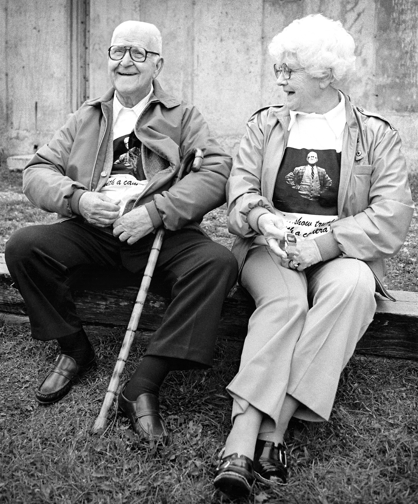

Learn more about the Missouri Photo Workshop's Exhibit

How the Missouri Photo Workshop Began
Cliff Edom, often credited as the “father of photojournalism education,” started the Missouri Photo Workshop in 1949. His wife, Vi Edom, was an integral part of the workshop. Cliff was inspired by the Farm Security Administration photojournalists who captured life in America during the Great Depression. The workshop started in Columbia, Missouri, and has branched out to more than 50 rural towns over the past seven decades.
About The Workshop Director
Brian Kratzer is a professor at the University of Missouri and the photo director for the Columbia Missourian. During his career, he has worked at the Moscow-Pullman Daily News, the Columbia Daily Tribune and the Gainesville Sun. Brian was a participant in the Missouri Photo Workshop as a graduate student at the University of Missouri and later served as a faculty member. He became director of the workshop in 2019 and is committed to helping photojournalists learn the value of telling longer stories.
Workshop Highlights
- Teaching more than 3,000 photojournalists how to shoot and edit a photo story
- Having more than 200 renowned faculty members across the years
- Bringing communities together to learn more about their fellow citizens
- Being the premiere photo editing workshop in the United States
Workshop Faculty
The faculty is made up of accomplished photo editors from America's leading newspapers, magazines and online news organizations. The workshop still follows Cliff’s motto: “Show truth with a camera. Ideally truth is a matter of personal integrity. In no circumstances will a posed or faked photograph be tolerated.” This exhibit features one photograph from each of the workshop years and documents daily life in Missouri from 1949 to today.